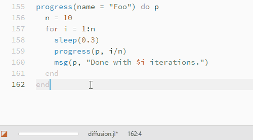

The Juno.jl Front-End
Enhanced Display
Juno.jl includes features which allow package developers to created enhanced displays in Juno. For example, we can print info to the console in a nicer way:
info("foo")
The following functions provide this interface:
Media.media — Function.media(T) gives the media type of the type T. The default is Textual.
media(Gadfly.Plot) == Media.PlotMedia.@media — Macro.Similar to abstract:
@media Foodefines Foo, as well as FooT, the type representing Foo and its descendants (which is useful for dispatch).
@media Bar <: Foo
Bar::FooTMedia.setdisplay — Function.setdisplay([input], T, output)Display T objects using output when produced by input.
T is an object type or media type, e.g. Gadfly.Plot or Media.Graphical.
display(Editor(), Image, Console())Media.getdisplay — Function.getdisplay(T)Find out what output device T will display on.
Juno.info — Function.info(msg)Show the given message in Juno's console using blue styling, or fall back to Base.info.
In a package, you can use import Juno: info to replace the default version with this one.
Progress Meters
Juno.jl allows package developers to use the progressbar which is provided in the Atom window. For example, you can easily show a progress meter for a for loop via the command:
@progress for ...
The following functions provide this interface:
Juno.@progress — Macro.@progress [name] for i = ...Show a progress metre for the given loop if possible.
Juno.progress — Function.progress(p::ProgressBar, prog::Number)Update p's progress to prog.
progress(p::ProgressBar)Set p to an indeterminate progress bar.
progress(f::Function; name = "", msg = "")Evaluates f with ProgressBar(name = name, msg = msg) as the argument and calls done on it afterwards. This is guaranteed to clean up the progress bar, even if f errors.
Juno.ProgressBar — Type.ProgressBar(;name = "", msg = "")Create a new progress bar and register it with Juno, if possible.
Take care to unregister the progress bar by calling done on it, or use the progress(f::Function) syntax, which will handle that automatically.
Juno.name — Function.name(p::ProgressBar, m)Update ps name.
Juno.msg — Function.msg(p::ProgressBar, m)Update the message that will be displayed in the frontend when hovering over the corrseponding progress bar.
Juno.right_text — Function.right_text(p::ProgressBar, m)Update the string that will be displayed to the right of the progress bar.
Defaults to the linearly extrpolated remaining time based upon the time difference between registering a progress bar and the latest update.
Base.done — Function.done(p::ProgressBar)Remove p from the frontend.
It is recommended to either use the @progress macro or the
progress(name = "Foo") do p
endnotation to ensure that the progress bars are properly unregistered in the frontend.
Console Interactions
Juno.jl lets package developers interact with users via the Juno console. For example, you can allow the user to select from a list of options:
selector(xs) -> x
or get input in the console:
input()
The following functions provide this interface:
Juno.isactive — Function.isactive()Will return true when the current Julia process is connected to a running Juno frontend.
Juno.input — Function.input() -> "..."Prompt the user to input some text, and return it.
Juno.selector — Function.selector([xs...]) -> xAllow the user to select one of the xs.
xs should be an iterator of strings. Currently there is no fallback in other environments.